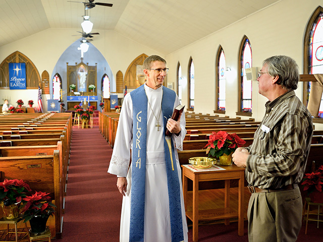

GRACE NEW CONVENANT PENTECOSTAL CHURCH
About the Church:
The Grace new covenant Pentecostal church is affiliated with the Pentecostal mission, which was founded in Srilanka by Pastor. Paul Kutty in 1923. It now has churches in over 65 countries operating under various names. The church exists to bring all people everywhere to the saving knowledge of our Lord Jesus Christ through the proclamation of the gospel and equipping believers for every God-glorifying service.
About the Church Pastor / Other Servants of God:
The Church is led by Pastor. Shaji Mangalath and Sister. Annie Mangalath.
They felt a strong call to strive for God’s kingdom, left everything to follow Jesus in order to pursue righteousness,
their Faith in God and relentless prayer were the two most important factors in building the Church.
They minister along with the other two full time ministers Sis. Karen Maclean and Sis.
Erika and they discipline the church to prepare the believers for the kingdom of God.
